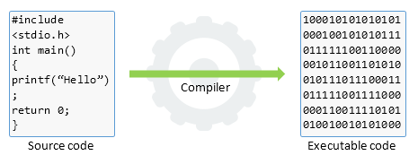

Projects
These are a few projects that I have done through the course of my studies. Be sure to check it out on Github!
This Android applications scans RFID tags installed in student ID cards to store their credentials and use it to take attendance. It only works on NFC enabled smartphones.
Github
NFC Attendance Android Application

A python implementation of the game go, which supports AI, multiplayer over the network and two types of tournaments.
Github
Go Game
Nautilus is a thin Aerokernel OS used for development. Nautilus currently
has no system call interface as there is no user space. This can make it
challenging to port Linux programs and libraries into the kernel because
of their assumptions about system call availability. For this purpose, we
added two system call mechanisms to Nautilus and then fleshed out a Linux-
compatible implementation.
Github
Read More
Watch Demo
System Calls in Nautilus

The main objective of this project is to ease the process of extracting information from news articles. This program achieves the following: a.) Classifying the data with machine learning. b.) Extraction of relevant entities from the dataset. c.) Creating a graphical database to showcase the relationships between entities.
Github
Knowledge Visualization from News Articles Using a Graph DB

A bottom-up construction of a compiler with support for a language with loops, conditional statements, variables and arrays.
Github
LD Compiler
Microservices are widely used in modern cloud applications. To prevent malicious internal accesses among microservices, they rely on inter-service access control. However, the complexity of fine-grained access control policies, along with the large-scale and dynamic nature of microservices, makes the current manual-configuration based approach unsuitable. In this paper, we present AutoArmor, the first attempt to automate inter-service access control policy generation for microservices, with two fundamental techniques: (1) a static analysis based request extraction that automatically obtains the invocation logic among microservices, and (2) a graph based policy management that generates corresponding access control policies and performs on-demand policy update.
Read More
Automatic Policy Generation for Inter-Service Access Control of Microservices